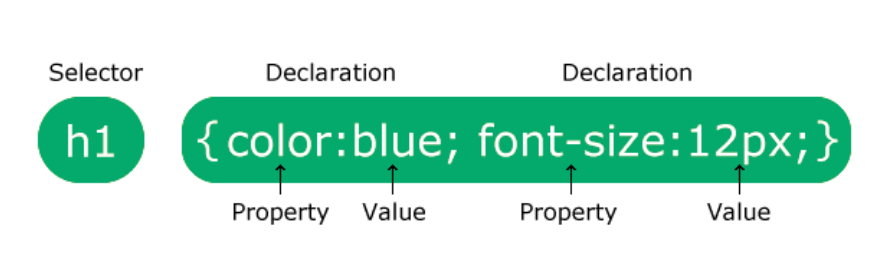

O que é CSS?
CSS é uma folha de estilo em Cascata que permite criar páginas web mais agradaveis, mais estilizado e mais organizado. A web seria um lugar chato se todos os web sites tivessem estilos iguais, sem estilo e sem nenhuma cor.
CSS é uma folha de estilo em Cascata que permite criar páginas web mais agradaveis, mais estilizado e mais organizado. A web seria um lugar chato se todos os web sites tivessem estilos iguais, sem estilo e sem nenhuma cor.
Uma regra CSS consiste em um seletor e um bloco de declaração.
O seletor aponta para o elemento HTML que você deseja estilizar. O bloco de declaração contém uma ou mais declarações separadas por ponto ou virgulo.
O Arquivo CSS ficar salvo no servidor, sendo necessário apenas a criação de um link para realiazar a vinculação com o documento HTML
O CSS inline é pouco utilizado em website, por que ele deixar o código HTML mais poluído com mais informação. Sua utilização é bem simples, para usá-lo, basta inserir o style dentro da própria tag html que ele receberá o efeito.